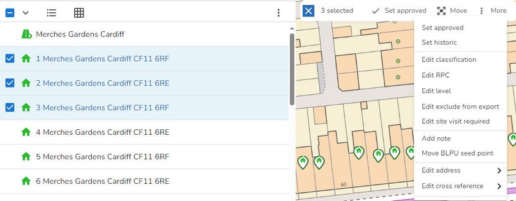
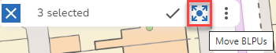
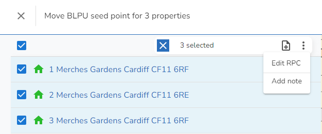
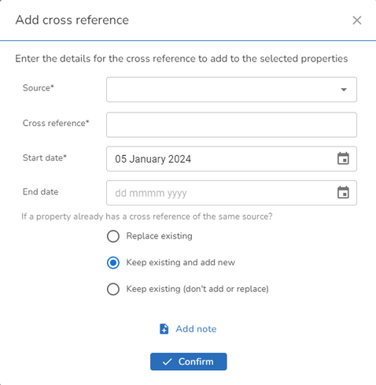
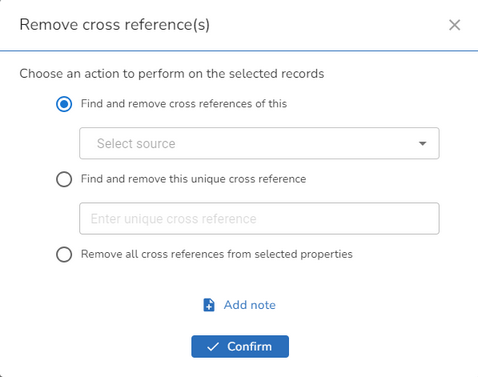

Sometimes you might want to change the details of more than one property at a time. To select the properties you wish to edit you can either use one of the following options:
•use the Search to return the list to the Explorer
•click on a Street to display the details and select the Related tab
•use the Select properties tool to the right of the Search box to select properties from the map e.g.

Once the properties are displayed in the Explorer, select the ones you want by clicking in the box and the multi-edit toolbar and actions are then displayed.
Note: You may also select all the entries in the Explorer by clicking in the box at the top of the list and then use the Ctrl key to deselect any entries you don't want to include.

Note: For each of the actions you will also be able to enter an identical Note to explain your action if required.
Set approved or historic
These options will set the BLPU Logical Status and the Logical Status of all LPIs on the property to Approved or Historical respectively. You will also have the option to change the State, RPC, Official address, Postal address, Post town and Postcode for the selected properties to the details you select.
Editing individual entries
The Edit classification, RPC, Level, Exclude from export and Site Visit required simply allow you to change the one entry for all of the selected properties.
Add note
This option lets you add an identical Note to each of the selected properties.
Move BLPU seed point
If you select the Move BLPU seed point action or select the Move BLPUs tool from the actions toolbar e.g

You will see the selected properties in the explorer ready for you to move their seed points and edit the RPC if required.

Edit address
Selecting this action allows you to update the address fields you wish to apply to the selected properties. You may edit the Street, Post town, Postcode, Official address or Postal address.
Edit cross reference
When you select this you get options to Add or Remove cross references.
Add cross reference
When you select to add a Cross Reference to multiple properties you will see the following dialog:

First select the Source for the BLPU Application Cross reference that you wish to add and then enter the Cross reference that you wish to be applied to all selected properties. You may also select a Start date for your Cross reference. You then have to select one of three options in case there is an existing Cross reference for the same Source already existing on any of the selected properties.
The default is to Keep any existing Cross reference and just add a new one but you could choose to Replace existing (which would delete any existing cross reference with the same source) or Keep existing (don't add or replace) which would mean that if any of the selected properties had a cross reference of the same source a new cross reference would not be added.
If you wish to add a note click Add note and enter the note in the box provided, otherwise click Confirm to add the Cross reference to all the selected properties.
Remove cross reference
When you select to remove a Cross reference to multiple properties you will see the following dialog:

The first option allows you to select a Cross reference Source and any Cross reference matching this source on any of the selected properties will be removed. The second option allows you to enter a specific Cross reference which will be removed from any of the selected properties. The last option will remove all Cross references from all of the selected properties. Select the option that you wish to use.
If you wish to add a note click Add note and enter the note in the box provided, otherwise click Confirm to add the relevant Cross references will be removed from the selected properties.